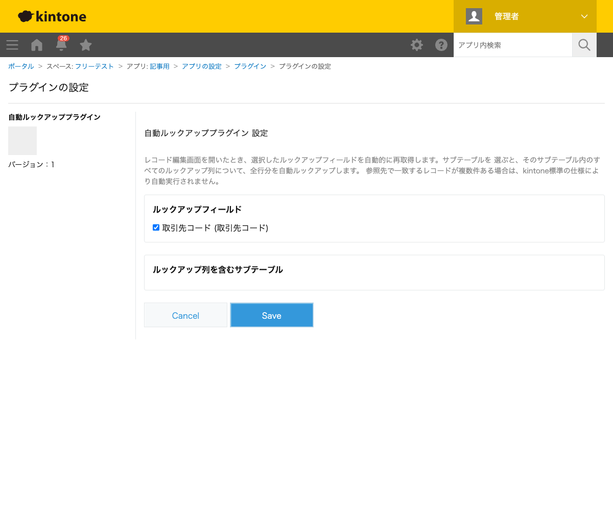
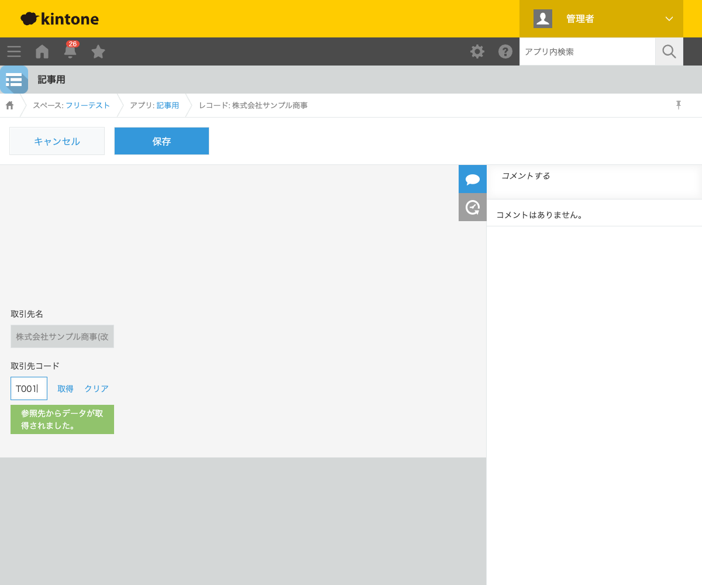

GovAppsプラグイン 安全性を確認できる無料kintoneプラグイン集
取引先マスタで会社名を変更しても、すでに作成済みのレコードにコピーされた会社名は 古いままです。この記事では、レコードの編集画面を開いたときに自動でルックアップ先の 最新情報を再取得する方法を、実際に取引先名が改称され、それが自動反映される様子つきで 解説します。
kintone標準のルックアップフィールドは、レコード作成時や、ルックアップフィールド自体の値を 手動で変更したときにしか参照先のデータを取得しません。参照先のマスタデータだけを更新しても、 既に作成済みのレコード側は自動的には追従せず、利用者がルックアップ欄をクリアして 入力し直すまで古い値のままになります。
| 方法 | 向いている場合 | 注意点 |
|---|---|---|
| JavaScriptを自作する | 社内に開発者がいて、細かい制御をしたい場合 | ルックアップフィールドの型判定・サブテーブル内のルックアップへの対応など、実装すべき分岐が多い |
| 有料の他社プラグイン | 予算があり、サポートを重視する場合 | 月額課金が発生する。ソースコードが非公開で処理内容を確認しにくい |
| GovAppsプラグイン(このプラグイン) | 無料で、対象フィールドを選ぶだけで試したい場合 | 参照先で一致するレコードが複数ある場合はkintone標準の仕様により自動実行されません |
自動ルックアッププラグインは無料・広告なしで、 ソースコードをGitHubで全公開 しています。再取得処理はkintone標準のルックアップ機構をそのまま呼び出すだけで、外部サーバーへの 通信は一切ありません。
自動ルックアッププラグインは、自動的に再取得したい ルックアップフィールドにチェックを入れるだけで使えます。

取引先コード「T001」・取引先名「株式会社サンプル商事」でレコードを保存したあと、 取引先マスタ側で会社名を「株式会社サンプル商事(改称後)」に変更しました。この状態で レコードの編集画面を開くと、ユーザーが何も操作しなくても取引先名が自動的に 最新の社名へ更新されます。画面上部には「参照先からデータが取得されました。」 という通知も表示されます。
